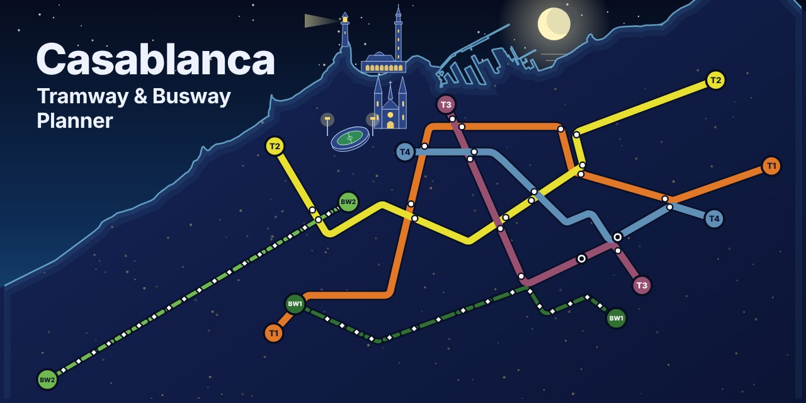

Plan your trip across Casablanca.
An interactive route planner for the tramway lines T1 to T4 and the busway lines BW1 and BW2. Pick where you start and where you go, and the map shows the way, in 2D or in 3D.
If the planner does not appear, open Tramway Casablanca – Carte interactive et calcul d'itinéraire in its own tab.
The network
Six lines across the city: four tramway lines and two busway lines. Click the map to enlarge it.
- Tramway T1
- Tramway T2
- Tramway T3
- Tramway T4
- Busway BW1
- Busway BW2
Map: official Casa Tramway and Casa Busway network plan (October 2025). It belongs to its publisher and is shown here for reference.

About the project
Everything runs in your browser, so there is no server to wait for.
Casablanca Tramway and Busway Planner
A route calculator for the Casablanca public transport network. It covers the four tramway lines and the two busway lines on an interactive map, with transfers, a 3D view, a PDF of your trip and sharing on WhatsApp.
- Lines
- T1 to T4, BW1, BW2
- Built with
- Leaflet, MapLibre, JavaScript
- Runs
- In the browser